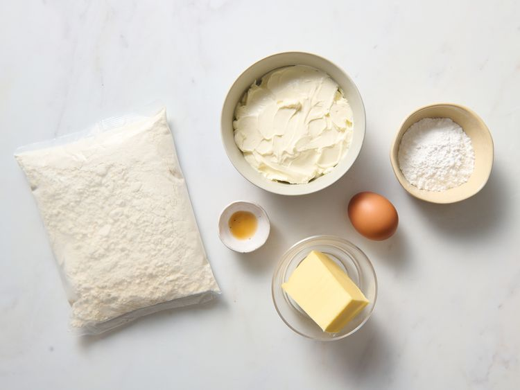
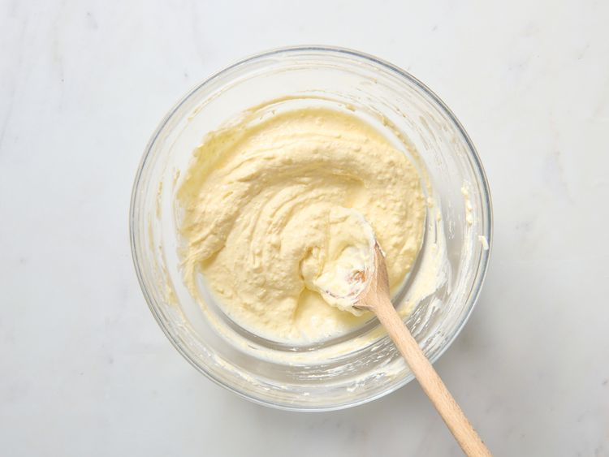
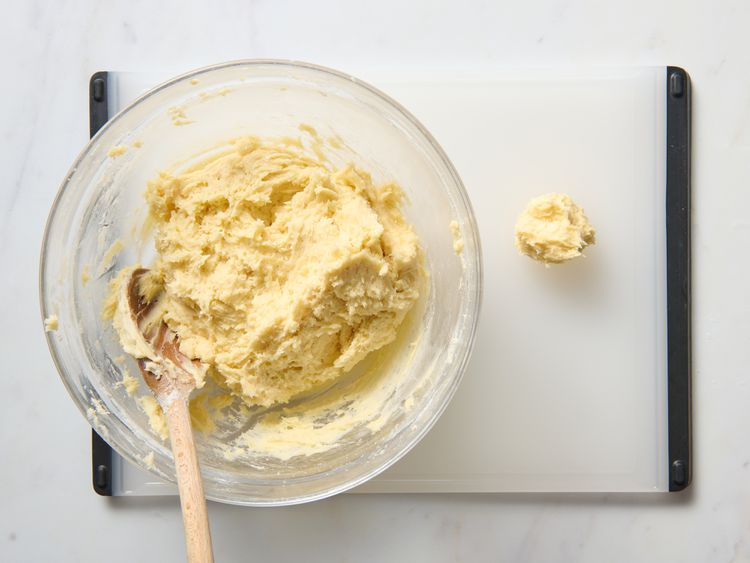
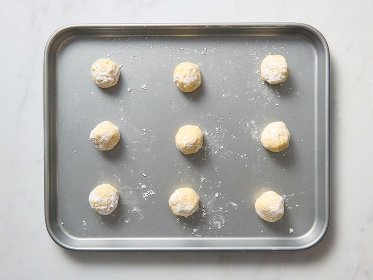
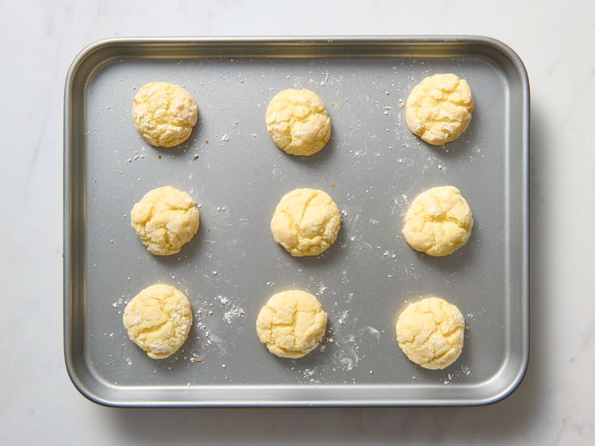
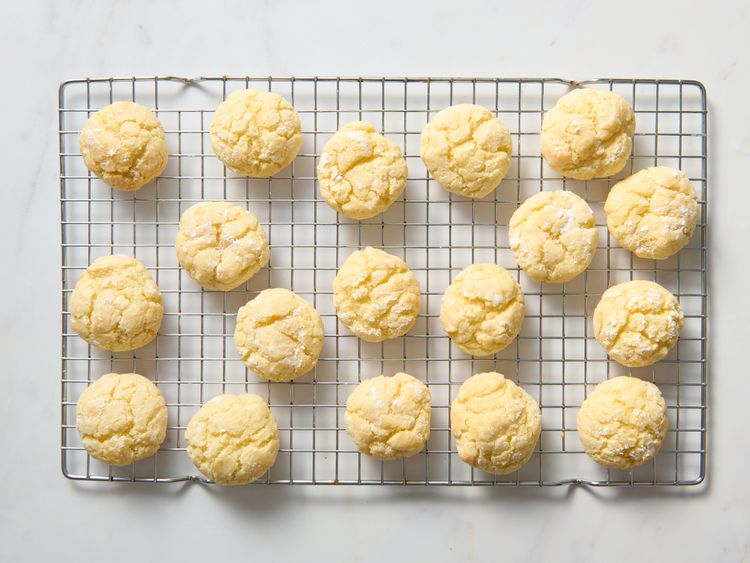

Ingredients (24 servings):
- ¼ cup confectioners' sugar
- 1 (8 ounce) package cream cheese, softened
- ½ cup unsalted butter, softened
- 1 large egg
- ¼ teaspoon vanilla extract
- 1 (15.25 ounce) package yellow cake mix
Instructions:
- Gather all ingredients. Preheat the oven to 350 degrees F (175 degrees C). Place confectioners' sugar into a shallow bowl. 
- Beat cream cheese and butter with an electric mixer in a medium bowl until creamy. Stir in egg and vanilla. 
- Add cake mix and stir until well blended. Roll dough into 1-inch balls. 
- Roll balls in confectioners' sugar to coat; place 1 inch apart onto an ungreased cookie sheet. 
- Bake in the preheated oven until set, 10 to 13 minutes. 
- Remove from the oven and transfer to wire racks to cool. 